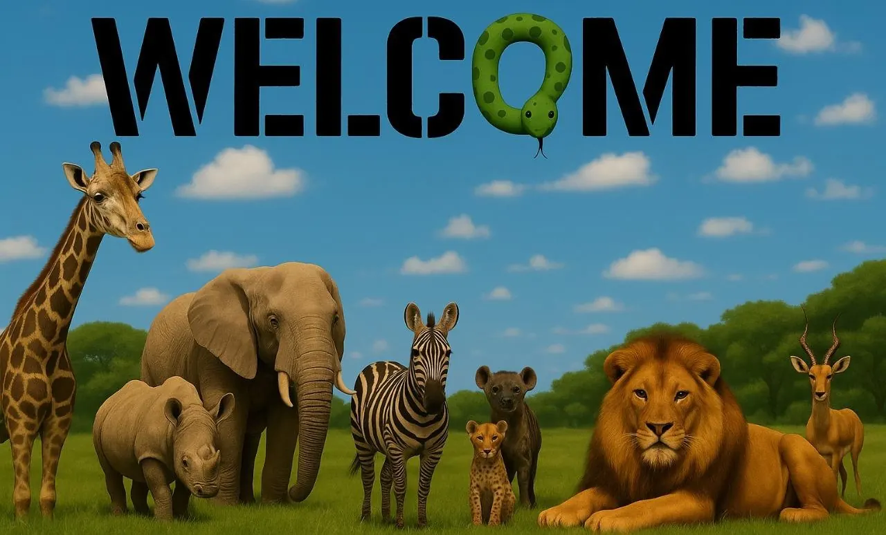

About Animal Base
This website is an educational project aimed at children, introducing them to the world of animals and their different species in a simple and fun way.
What you will find here
The site covers seven animal families, with information about animal types and their characteristics to help children learn in an interactive and safe manner.
It started as a first-year team assignment at the Faculty of Computers and Artificial Intelligence, built with HTML, CSS and JavaScript. This edition keeps the original idea and rebuilds the design and the code.

Our team
Eight first-year students, one shared project.
Shaher Mamdouh Ahmed
Team leader
Contributed to the layout.
Malak Samir Tolba
Team member
Worked on the navigation.
Tarek Hany Mohamed
Team member
Helped with the styling.
Aalaa Tarek Ibrahim
Team member
Developed the animal pages.
Mazen Mohamed Ahmed
Team member
Assisted with the design.
Sabrin Walid Moustafa
Team member
Managed the images.
Hamdy Waleed Abdullah
Team member
Wrote the introduction text.
Seifeldin Tamer Kamal
Team member
Organized the content.